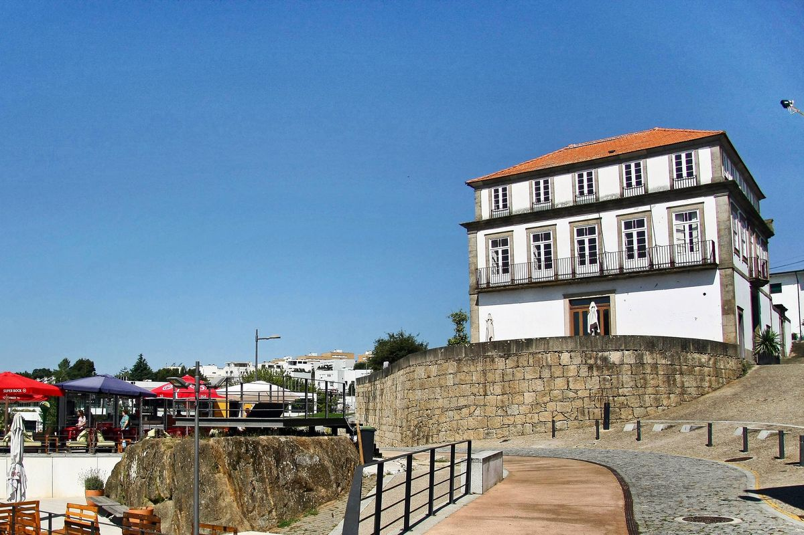
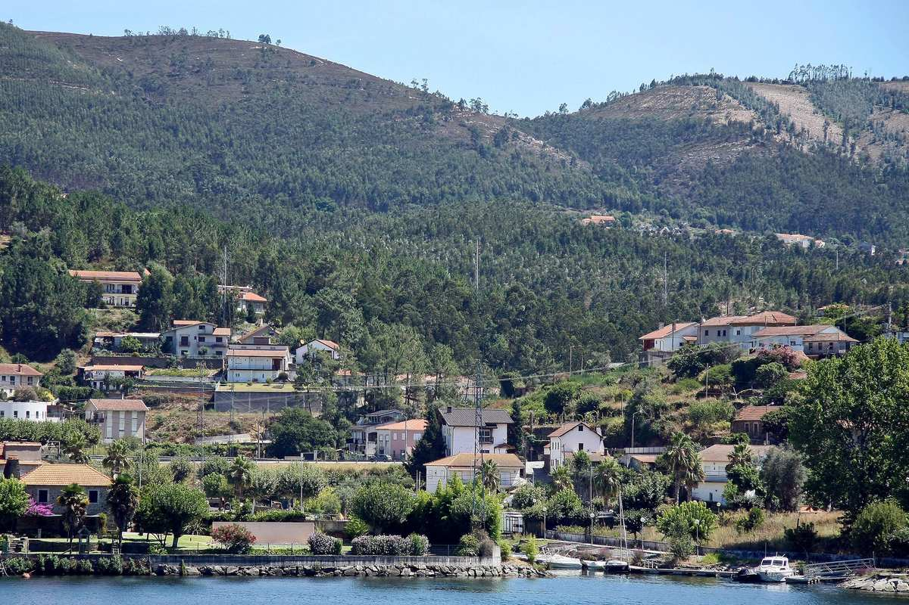

| Bom dia. Esta é a primeira Maré: chega à terça e à sexta. Começa em Gondomar, que a 22 de junho se tornou a segunda «Cidade Europeia Autêntica» de Portugal, depois de Lisboa1. Hoje: | – | o fio de ouro de Gondomar | | – | o crédito à habitação desde agosto | | – | quatro estrelas novas no Porto | | – | o preço do fogo de fim de ano da Madeira |
|
| | | Fio a fio O que têm em comum Sharon Stone, a rainha Letizia e a voz de La Casa de Papel? |
Marcador · não é fotografia Foto de imprensa: Topázio / AC Filigranas, a pedir Mãos numa bancada de filigrana · 4:5 · 1200 × 1500 |
Em 2014, Sharon Stone foi fotografada com um coração de filigrana. Tinha saído de uma bancada de Gondomar, na AC Filigranas, uma oficina pequena que lançou a sua marca nesse mesmo ano2. Quatro anos depois, a rainha Letizia recebeu Marcelo Rebelo de Sousa, em visita de Estado a Espanha, com brincos de filigrana de ouro portuguesa3. E Cecilia Krull, a voz que canta o genérico da série, é desde dezembro de 2021 embaixadora da filigrana de Gondomar4. 42% A filigrana portuguesa só se faz em Gondomar e na Póvoa de Lanhoso5. Gondomar, sozinho, produz 42% da ourivesaria e joalharia do país6. Câmara Municipal de Gondomar, via Jornal de Negócios, 18 abr. 2023. |
A bancada. O ouro é puxado à mão, com uma tenaz, por furos cada vez mais estreitos, até ficar da grossura de um cabelo. Dois fios torcem-se num só e enchem, um a um, o esqueleto da peça7. O vestido de filigrana que Gondomar levou à Expo 2020 Dubai juntou cerca de 115 peças, mais de dez artesãos e 2 040 horas de trabalho8. Está no Museu Municipal da Filigrana, na Casa Branca de Gramido9. |
 Casa Branca de Gramido, Valbom. Foto: Vitor Oliveira, CC BY-SA 2.0 |
O contraste. Antes da venda, cada peça passa pela Contrastaria, o serviço do Estado que ensaia o metal e grava a marca; em Gondomar, fica no edifício Goldpark10. Desde março de 2024, a filigrana feita à mão tem uma marca só sua11. É património imaterial nacional desde 2023 e, desde 2025, candidata à lista da UNESCO12,5. Em Times Square, uma loja portuguesa de conservas tem uma peça de filigrana na montra13. |
| | | Os números 2 264 €/m² preço mediano das casas vendidas em Portugal, 12 meses até junho; +17,7% num ano14 | 2 348 €/m² o mesmo em Gondomar; +23,4% num ano15 | 253 → 128 m² o que 300 000 € pagavam em Gondomar em 2021, e o que pagam agora15 | 3,00% taxa média dos novos créditos à habitação em agosto16 |
INE, preços da habitação ao nível local, 2.º trimestre de 2026 (medianas de todas as casas vendidas); Banco de Portugal, taxa acordada, agosto de 2026. |
| | | | | | Pelo país O crédito à habitação ficou mais curto.Desde 1 de agosto, o prazo máximo é de 40 anos até aos 35 anos de idade e de 35 anos a partir daí. A prestação de todos os seus créditos não pode passar de 45% do rendimento líquido, salvo exceções; até julho, eram 50%17. Para uma casa que não seja a sua habitação própria e permanente, o banco financia no máximo 80% do valor17. O Porto ganhou quatro estrelas Michelin.No guia de 2026 entraram o dop, de Rui Paula; o Éon, no Palacete Severo; o Gastro by Elemento, junto ao Dragão; e o In Diferente, da chef brasileira Angélica Salvador, com peixe das lotas de Matosinhos e Aveiro18. 1 212 750 €.É o preço-base que a Madeira pôs no concurso europeu para o fogo de artifício desta passagem de ano. Há um ano, era 1 155 000 €19. |
| | |  Marina de Melres. Foto: Vitor Oliveira, CC BY-SA 2.0 |
Em Gondomar O rio. Gondomar tem cerca de 37 km de frente ribeirinha e, desde 17 de outubro, uma Estação Náutica, com marinas na Lixa e em Melres20,21. Um dos embaixadores é o canoísta Gustavo Gonçalves, de Marecos, campeão do mundo de K4 500 m21. Em Valbom, o pavilhão tem o nome de Ricardinho, seis vezes eleito o melhor jogador de futsal do mundo22. O escultor. Zulmiro de Carvalho nasceu em Valbom em 1940 e estudou na St Martin's, em Londres, com uma bolsa da Gulbenkian; foi lá que conheceu Anthony Caro. Tem obras monumentais na Coreia do Sul e em Macau e, em Gondomar, o Pórtico do Monte Crasto23. Diogo Jota era de Gondomar e começou a jogar no Gondomar Sport Clube. A 3 de outubro, a Câmara entregou-lhe, a título póstumo, a Medalha de Mérito Municipal, grau ouro24. |
|
| | | A tabela As escolas a 20 minutos da Câmara, nos exames nacionais de 2025Lugar entre 618 escolas, média de 0 a 20 e minutos de carro desde a Câmara de Gondomar28. | Lugar | Escola · Carro | Média |
|---|
| 1 | Grande Colégio Universal
Porto · 13 min | 16,81 | | 2 | Colégio N. Sra. do Rosário
Porto · 16 min | 16,56 | | 3 | Colégio Horizonte
Gaia · 15 min | 16,38 | | 3 | Colégio Efanor
Matosinhos · 17 min | 16,38 | | 16 | Colégio Paulo VI
Gondomar · 3 min | 15,33 | | 52 | Colégio Camões
Rio Tinto · 9 min | 13,79 | | 151 a 414 | As cinco secundárias públicas do concelho | 12,60 a 11,35 |
O CLIP (Cambridge) e a Deutsche Schule (Abitur alemão), também a menos de 20 minutos, não fazem os exames nacionais e não entram na tabela29. 618 escolas com pelo menos 20 exames nas dez disciplinas principais. Ranking das escolas 2025, Observador com a Nova SBE, dados do Ministério da Educação, publicado a 30 out. 2026. A negrito, as escolas do concelho. |
| | | Espaço do promotor parceiro · Publicidade |
Marcador · não é fotografia Espaço do promotor parceiro Fotografia do promotor, com crédito · 4:5 · 1200 × 1500 |
Aqui vai aparecer a casa de um promotor parceiro da Maré, com fotografia, preço e ligação. Esta semana, o espaço está livre. |
| | | O jogo · Se tiver um minuto Três perguntas sobre o que não vem nesta carta. A primeira: Quantas peças de ouro marcou a Contrastaria em 2023, em todo o país? |
| | | Traga um amigo Já trouxe {{rp_num_referrals}} leitores para a Maré. Com 1, recebe um dos nossos guias; com 3, a carta de domingo, só para membros. Partilhe o seu link: {{rp_refer_url}} |
| | | Responda a este email e conte-nos se há uma peça de filigrana na sua família e de quem foi. Na sexta, em «Os leitores», publicamos algumas respostas com o primeiro nome e o país, só com a sua autorização. Até sexta. |
| | | |
|